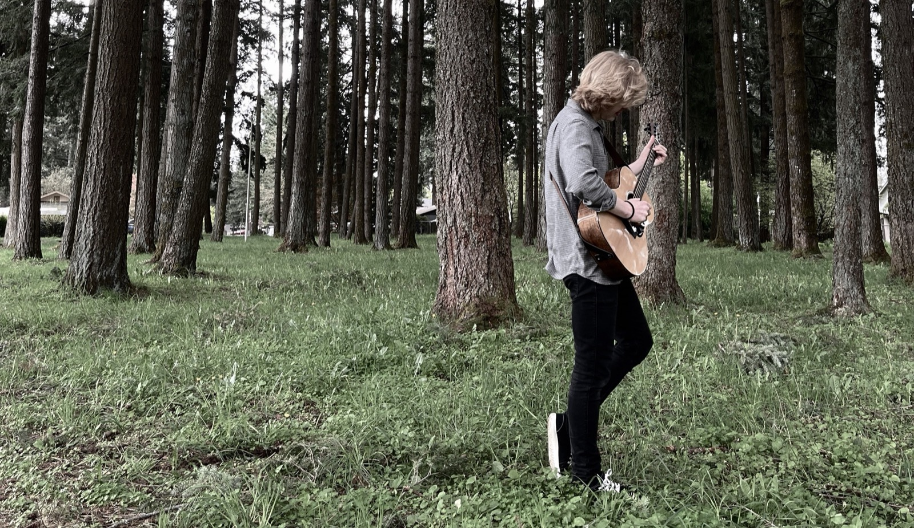

Still · slow drift until a film existsAn accidental debut. Eight songs written and recorded for Stefan to listen to himself, eventually compiled, mixed, and released in 2025 under the name Stefan Auvache, then reissued as Havre De Grace in January 2026.
I could be a singer, living on the road
4:26Crossing the water on your way to me
3:18I'm sitting in a place that I never thought I'd be
4:05There stands a tree house atop of cross hill
3:35She's a demolition woman, coming for my heart
3:50I don't want to track in mud when I come into your home
6:04Her heart is a graveyard, her love is a ghost
5:18The first version, before the album
4:07